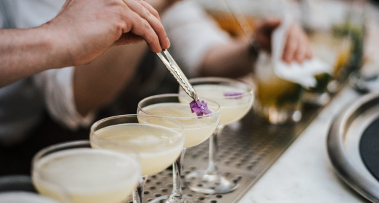
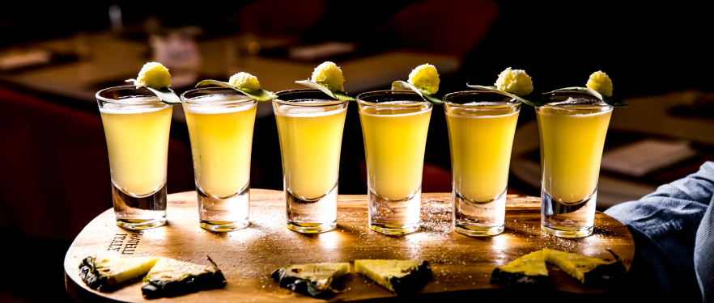
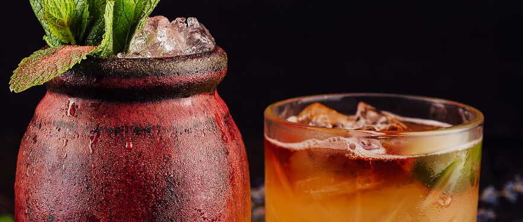

Elevating Your Cocktail Hour: Creative Hors d'Oeuvres Ideas
Cocktail hour sets the tone for any event, offering guests a chance to mingle, sip on drinks, and tantalize their taste buds with delicious bites. Elevate your cocktail hour with creative hors d'oeuvres ideas that will leave a lasting impression on your guests. From playful twists on classics to inventive flavor combinations, here are some ideas to inspire your next event:
Put a sophisticated spin on a childhood favorite by serving miniature grilled cheese sandwiches paired with shot glasses of creamy tomato soup. The combination of warm, gooey cheese and rich tomato soup is sure to be a hit with guests of all ages.
2. Asian-inspired Chicken Satay Skewers with Peanut Dipping Sauce: Transport your guests to the streets of Bangkok with flavorful chicken satay skewers served alongside a tangy peanut dipping sauce. Garnish with chopped peanuts and fresh cilantro for an extra pop of flavor and color.
3. Caprese Salad Skewers with Balsamic Glaze: Create a bite-sized version of the classic Caprese salad by skewering cherry tomatoes, fresh mozzarella balls, and basil leaves on toothpicks. Drizzle with balsamic glaze for a sweet and tangy finish that ties the flavors together perfectly.
4. Crispy Risotto Balls with Marinara Dipping Sauce: Transform leftover risotto into crispy, golden-brown arancini balls filled with gooey mozzarella cheese. Serve with a side of marinara dipping sauce for a deliciously indulgent appetizer that's sure to please.
5. Smoked Salmon and Cucumber Canapés: Impress your guests with elegant smoked salmon and cucumber canapés topped with dill cream cheese and a sprinkle of capers. Serve on thinly sliced cucumber rounds for a refreshing and light bite that pairs perfectly with a glass of champagne.
6. Mini Beef Wellington Bites: Treat your guests to a taste of luxury with miniature beef Wellington bites. Tender beef filet wrapped in flaky puff pastry and served with a dollop of savory mushroom duxelles is sure to delight even the most discerning palates.
7. Mango Shrimp Ceviche Spoons: Serve up a taste of the tropics with refreshing mango shrimp ceviche spoons. Marinate succulent shrimp in a zesty citrus dressing, then spoon onto individual tasting spoons for a colorful and flavorful appetizer that's perfect for summer events.
8. Truffle Mac and Cheese Bites: Indulge your guests with bite-sized truffle mac and cheese bites served in elegant porcelain spoons. Creamy macaroni and cheese infused with earthy truffle oil and topped with crispy breadcrumbs is sure to be a crowd-pleaser.
Impress your guests with colorful stuffed mini bell peppers filled with creamy herbed goat cheese. Garnish with fresh herbs and a drizzle of balsamic glaze for a sophisticated appetizer that's as beautiful as it is delicious.
10. Gourmet Pigs in a Blanket: Put a gourmet twist on a classic favorite by serving mini pigs in a blanket made with high-quality sausage wrapped in flaky puff pastry. Serve with a side of whole grain mustard or honey mustard dipping sauce for an extra kick of flavor.
In conclusion, elevating your cocktail hour with creative hors d'oeuvres ideas is a surefire way to impress your guests and create a memorable event experience. From playful twists on classics to elegant gourmet bites, these hors d'oeuvres ideas will take your cocktail hour to the next level and leave guests raving long after the event is over.